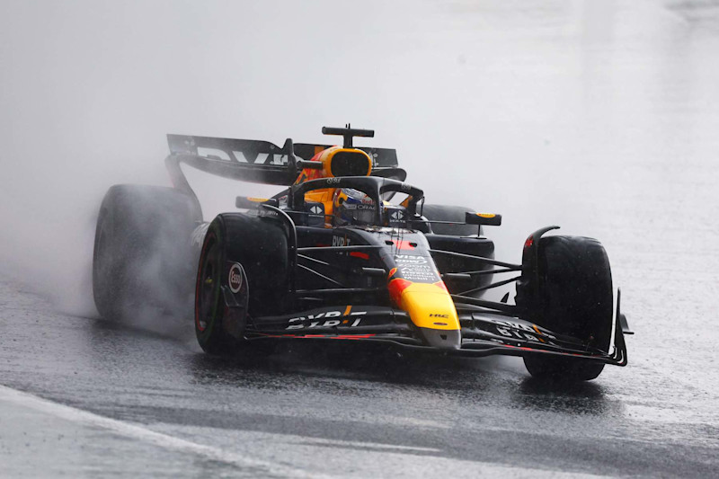
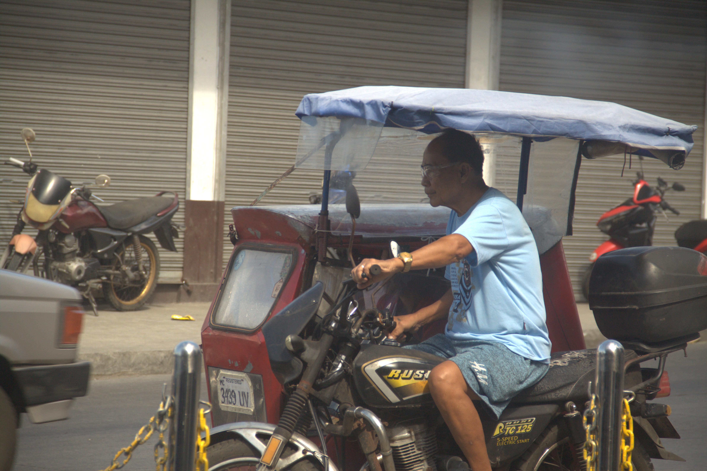
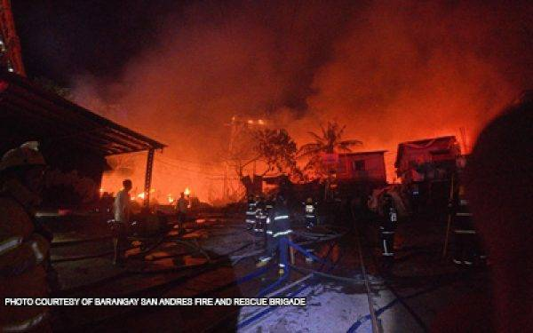

Articles With Geomertic Photos
Below are sample articles from original works and from online sources which uses geometric sequence in its photos.
Verstappen defies odds after P17 start, storms to much-needed win in drama-filled weekend
By: John Benedict L. Silverio

Image Source: Bleacher Report
In a chaotic race with odds against him, "Mad Max" became the moniker to be heard once more as Max Verstappen put out a flawless drive in rainy conditions of Sao Paolo Grand Prix, regaining a comfortable lead in the championship standings with just three races to go.
Verstappen, who was just 47 points ahead of Lando Norris in standings prior to yesterday's race, started 17th on the grid, and put up a sensational Dutchman show to grab a sterling Brazilian GP win, his first since June in Spain.
The Red Bull racing star swung back to a cozy 62-point upperhand in the championship race with 393 points, giving Norris a huge ground to cover after finishing the grand prix in P6 and currently sitting at 331 points.
Friday's sprint race saw the McLaren duo of Norris and Oscar Piastri locking the 1-2, the same order they ended sprint quali with while Verstappen nabbed P3.
Then strings of bad luck rolled for Verstappen who was demoted to P4 in the sprint race due to Virtual Safety Car infringement followed by a P12 result in qualifying after a red flag caused by Lance Stroll who shunted his Aston Martin into the barriers towards the end of Q2.
Stroll's crash also took a toll on Verstappen's Red Bull teammate, Serigo Perez as the Mexican did not get to finish his final Q2 lap, putting him at P13 while Norris continued his dominance after taking pole position.
Saturday's qualifying was postponed to Sunday morning due to heavy rain.
The qualifying ended with an unlikely order in the grid with Norris at pole position followed by Mercedes' George Russell in P2 and a surprise appearance for RB's Yuki Tsunoda in P3.
The Dutchman then received another penalty, a 5-place drop in the grid after a change in his power unit, putting him at P17 to kickoff the grand prix.
With the Interlagos circuit still featuring a wet track and an impending threat of another rain, the grand prix had its first havoc at the formation lap as Stroll spun out and drove into the gravel, taking him out of the race alongside Alex Albon who did not get to start as he had a massive crash in morning's qualifying, deeming his Williams car unable to be repaired by afternoon race-time.
Once the now 70-lap race formally began and with all drivers using intermediate compound tyres, Russell had a more favorable launch against Norris to take P1 while Verstappen quickly made work of the pack, climbing 6 positions to enter lap 2 at P11 and continued his quick pace after.
Williams was then fully taken out of the grand prix as Franco Colapinto crashed at lap 32 that caused a red flag while Norris and Russell pitted after a virtual safety car period, putting Alpine's Esteban Ocon at the lead followed by Verstappen while his Alpine teammate Pierre Gasly sits at third on race resume.
The race was halted to another restart after a Safety Car caused by Carlos Sainz's crash in his Ferrari SF-24.
And then it was all Dutchman's show as Verstappen overtook Ocon in the restart and never looked back, surging to a 19-second win, his first GP victory since the Spanish Grand Prix in June.
Ocon and Gasly then held on to a 2-3 finish to round off the podium and complete an astonishing week for Alpine which saw the team jumped from ninth to sixth in the constrictor's championship.
Meanwhile, Norris lost 18 points in his chase to Verstappen in the standings after a P6 finish.
This marks Verstappen's eighth-win of the season, the most by any driver with Norris being the next driver in the win count with three while Piastri and the Ferrari boys of Charles Leclerc and Sainz each has two wins.
Verstappen, who won five of the first 7 races of the season, saw his huge gap dwindle down to within arms reach behind Norris' momentum brought by the upgrades of McLaren who overtook Red Bull for the constructors championship at the end of Azerbaijan GP.
With only three more Grand Prix's to go, the 27-year-old Verstappen is at the brink of his fourth straight Formula One championship as he only needed to be leading by 60 points by the end of the next race in Las Vegas in November 21-23.
Aftertaker for a destination
By: Erin Izzabella O. Chua, FCPC Press Corps Pioneer Publications

Image Source: Francheska Grazielle Madera, FCPC Press Corps Pioneer Publications
In the means of living–
Anything can be done so easily despite the hardships. Even if it is not wealthy, perfect, or magnificent. Movement of legs and arms is all it takes for a greater outcome.
It starts with an interest, simply like starting with the fashion of motorbikes, then now becoming a part of life, whom George Vicente Sandiago Jr. can reflect with.
Ever since he could remember.
Problems may arise such as traffic congestion, unsafe road conditions, and dealing with difficult passengers who have become tricycle drivers like George’s worst enemy
For the 7.8% million registered motorcycles can bring down to a loss of money especially when their known things are being destroyed by people or by their accidents.
Just for a cheap price of 0.30 pesos, it was not worth it for the problems in George’s life. Being a tricycle driver is something he cannot let go of even until his last breath. When he sees the smiles of people, it makes him gain more confidence in his social life.
About 22.59% of motorcycles are being demolished due to the fact George does not even need the news to be aware. His own eyes are enough to suffice and how it is saddening that a person like him, cannot do much about it
Yet, it does not delay.
This shall not halt his determination knowing his brothers and sisters are scarred non-stop. Instead, it is an opportunity to expand his knowledge for people like you who could do the same.
His devotion to tricycles can be proven in other ways. After all, he is George, his intertwining fate can never be for a termination. He would not let anyone stop him from taking a sip from his favorite dish, Sinigang, after a long day of work.
Planetarium descended on FCPC
By: Danica Mae Gabatino, FCPC Press Corps Pioneer Publications

Image Source: Ma. Cassandra Garcia, FCPC Press Corps Head Photojournalist UNA Publications
First City Providential College (FCPC) Gymnasium was filled with interest, learning, wonder, and awe during the conduct of the iExperience digital mobile planetarium led by the Science department on March 1 and 2.
Its purpose is to expand the students' understanding of the United Nations Sustainable Development Goals 11 (Sustainable Cities and Communities), 12 (Responsible Consumption and Production), and 13 (Climate Action) which are the goals or program outcomes of the Basic Education programs of FCPC.
Moreover, gadget manipulative exhibits like rocks, meteorites and holograms brought fun and excitement to students. Amazement is marked on every FCPCian’s face at the displayed meteorites which were said to be thousand years since they landed on earth.
On the other hand, fear engulfed the FCPCians when the harmful effects of pollution, climate change, and warming of our own planet were explained.
Meanwhile, the concept of “SOME1” which means “Save Our Mother Earth as 1” were also taught. This focused on simple methods to solve the pressing problems in nature and our world.
According to the Elementary Science Coordinator Ms. Jasmin S. Galano, it is important for students to learn this kind of thing to know better solutions for issues related to our nature and the world we live in.
“We need to develop further understanding of our environment. This will help us know how to respond better,” she said.
Forest fire blaze 322 hectares in Baguio City
By: Euanne Decierdo, FCPC Press Corps, The Great Herald, Circulation Manager

Image Source: Philstar
Almost 322 hectares of forest were damaged due to the intense fire that occurred in Baguio City including the province of Benguet from January 1 to February 23.
According to fire inspector Ray Mayao, February 2020 was the last time forest fires were reported in Benguet including towns of Kabayan Bokod. With the opening month of the year 2024, forest fires occurred once again in the same place, Benguet Baguio City. The residents also reported that the acute fire covered the Tuba with a haze and sheet of ash fallout
An estimated 20 hectares have been affected by a fire located in the Philippine Military Academy area in Brgy. Kias. Reasons for the forest fire are still under investigation, however some suspect that it was caused by prolonged due to El Nino conditions
Residents in Baguio City and nearby places have been advised by the Department of Health Cordillera Administrative Region ( DOH - CAR) to take responsible measures in limiting exposure from the smoke due to the ongoing forest fire located in Mount Santo Tomas
Due to the risk of smoke exposure, Dr. Amelita Pangilinan convinced the public to prevent unnecessary outdoor activities, close windows, and wear face masks.
Moreover, Pangilinan also recommended staying hydrated and protecting eyes from irritations that may happen in exposure to smoke and ash particles, announce forest fires to authorities, and seek medical help at the nearest health care center if needed
Guro para sa laro, FCPC para sa puso
Menard Ralph M. Luya, FCPC Press Corps Assistant Sports Head UNA Publications

Image Source: Ma. Cassandra Garcia, FCPC Press Corps Head Photojournalist UNA Publications
Baon ang dedikasyon at pasyon sa isports
Naging guro ng maraming bata at nagsilbing pangalawang ama ng First City Providential College (FCPC) RoyalEagles Basketball team ang head coach na si Ronald Jay Dicierdo o mas kilala bilang coach RJ.
Laking FCPC at naging parte ng FCPC varsity noong siya ay binata atdala ang bola sa iba’t ibang torneyomula High School hanggang kolehiyo at nakamit rin ang magkakaibang kampeonato.
Nagsimula siya sa kanyang kampanya bilang coach noong 2014 sa Inter-Barangay Basketball League at naging part-timer sa FCPC nangsumunod na taon, sa tulong ni Dr.Leovenci Simon, kasalukuyang Vice President for Administration ng paaralan
“Nagstart yung journey ko as a coach nung time na hinawakan koyung Inter-Barangay noong 2014. Pero I started coaching sa FCPC noong 2015 kasi in-encourage ako ni Sir Vinci, ngunit part-time pa lamang ako noon,” saad ni coach RJ sa eksklusibong panayam kasama ang FCPC Press Corps.
Hindi nagpasindak si coach RJ samalamyang pagsisimula bilang coachng FCPC nang bigong makapasok sa quarterfinals ng CSANPRISA 2015. Hinarap ang mga pagsubok kasama ang kanyang koponan at patuloy na nag-ensayo at natuto dala ang determinasyon na nagbunga sa pamamayagpag simula noong 2016 bilang mga kampeon sa CSANPRISA
“After ng season naming noong 2015, halos wala talaga kaming panalo. Pero naging motivation namin yun kaya noong 2016 ay nakuha namin yung first CSANPRISA championship,” sambit ni coach RJ.
Marami na ang napatunayan ni coach RJ sa kanyang karera bilang ama ng FCPC basketball team tulad ng kanilang buong pusong pag-usad noong 2018 at dalhin ang FCPC sa siyam na kampeonato at ibulsa ang apat na magkakasunod na kampeonato sa CSANPRISA noong 2019
Patuloy naman silang nagpamalas ng galing nitong Pebrero sa pagkamit ng unang pwesto sa Private Schools Athletic Association (PRISAA) at pagbulsa ng kampeonato sa ABR Cup Season 2 pati na rin ang pag-uwi sa unang pwesto ng ABR cup Season 3 noong nakaraang taon. Nabigyan rin siya ng karangalan dahil sa husay sa kanyang larangan bilang “Best Coach".
Bago pa man naging coach aynaging estudyante rin ng kanyangama na basketball player at coach nasumuporta at inspirasyon sa kanyang hilig sa paglalaro. Inaalay ni coach RJ sa kanyang yumaong ama ang patuloy na pagtuturo at paggabay sa mga manlalarong may determinasyon at pagmamahal sa basketball.
Dahil sa dedikasyon at pagmamahal sa pagtuturo, naging likas na ito kay coach RJ at tinuturing na importanteng bagay at nagsisilbing layunin sa kaniyang buhay
“Malaki iyong nabibgay sakin nung coaching sa buhay ko, siguro ito yung passion ko at ito rin yung opportunity ko na makatulong sa mga bata na makapag-aral at makapaglaro sila” saad ni coach Rj.
Hindi naman mawawala ang mga hamon sa paggiging coach tulad ng pamumuno at paghawak sa kaniyang team, ngunit isang pangaral lamang kanyang tinatatak sa bawat batang pursigidong nageensayo para sa kanilang mga mithiin.
“Yung pag handle ng team hindi madali, you have 15 or 20 players, 20 na ugali yang iha-handle mo. Pag nandoon `yung passion at love mo talaga sa sport, ita-take mo ‘yon as a malaking challenge. Pero masarap sa feeling ‘pag nakikita mo nababago mo yung bata hindi lang sa laro kundi pati sa daily lives nila,” sambit ni coach RJ
Patuloy at mananatili si coachRJ dahil sa kabataang masipag at matiyagang matuto, ito na rin ang kanyang passion at pagmamahal hindi lamang sa basketball kundi pati sa FCPC. Lubos din niyang pinasasalamatan ang mga namumuno sa paaralang ito na sumusuporta at nagbibigay sa kanya ng tiyansang makapagturo at mabahagi ang kanyang kaalaman sa bagong yugto ng mga manlalaro
"Hangga’t may batang gustong matuto, hindi tayo titigil at nandito tayo para magturo para sa kanila,” sambit ni coach RJ.
Nasa 100 bahay nasunog sa Pasig; 500 pamilya apektado
Christopher Sitson, ABS-CBN News

MAYNILA — Nasa 100 bahay ang natupok habang humigit-kumulang 500 na pamilya ang apektado sa sunog sa residential area sa Barangay Manggahan, Pasig City nitong Martes ng gabi.
Pasado alas-6:30 ng gabi naiulat ang sunog na umabot sa ikatlong alarma, ayon kay F03 Christopher Girao ng Fire and Arson Investigation Unit ng Bureau of Fire Protection (BFP)-Pasig.
Sa ilalim ng ikatlong alarma, 12 firetrucks ang kailangan para maapula ang apoy. Pero ayon sa BFP, mahigit 50 firetrucks ang rumesponde sa sunog na tumagal ng mahigit apat na oras bago naapula.
Wala namang nasugatan o nasawi sa insidente, ayon sa BFP.
"Ang kadahilanan po kaya umabot sa ikatlong alarma ay 'yung mga tahanan po ay gawa sa light materials katulad po ng kahoy kaya mabilis kumalat ang apoy," sabi ni Girao.
Kuwento ni kay Jessie Odiame, presidente ng Villacruzes Neighborhood Association, nagmula ang sunog sa bahay ng isang residenteng nagluto gamit ang kahoy.
"Ito pong sunog ay nanggaling sa bahay isa pong nangangalakal dito sa lugar namin. Dalawang beses na po naawat 'yung pinagsabihan ko na po ito na huwag silang gagamit ng kahoy na gatong," sabi ni Odiame.
Bukod sa mga bumbero, tumulong din ang mga residente sa pag-apula ng apoy.
"Ang una pong ginawa ng asawa ko bumitbit po siya ng isang timbang tubig. Kaso nung paglapit niya roon sa may bahay hindi na po kaya ng timba-timbang tubig kasi 'yung apoy sobrang lakas po," sabi ng nasunugan na si Jodalyn Guadayo.
Problema ni Guadayo ngayon ang mga natupok na gamit dahil wala silang naisalba maging mga gamit sa eskwela ng mga anak niya.
"Lahat po ng gamit nila sa school kahit mismong bag lang sana or folder hindi po namin nai-ano, nawala po sa isip namin kasi bigla-bigla po 'yung apoy sobrang lakas po 1-2 minutes talagang natupok po lahat," sabi ni Guadayo.
Patuloy ang imbestigasyon ng BFP-Pasig sa halaga ng naiwang pinsala ng sunog. Nananatili sa dalawang evacuation center ang mga nasunugan na nakatanggap na ng mga sleeping kit, serbisyong medikal at pagkain.